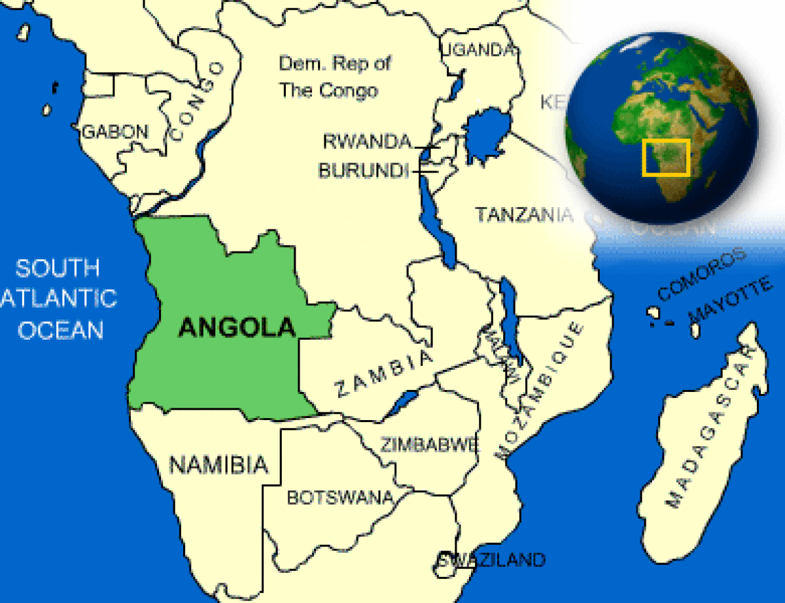

What countries border Angola?

What is the current weather in Angola?
What is Angola famous for?
What is the capital of Angola?
| Capital | Luanda |
| Government Type | presidential republic |
| Currency | Angola Kwanza (AOA) |
| Total Area |
481,351 Square Miles 1,246,700 Square Kilometers |
| Location | Southern Africa, bordering the South Atlantic Ocean, between Namibia and the Democratic Republic of the Congo |
| Language | Portuguese (official), Bantu and other African languages |
| GDP - per capita (PPP) | $6,800.00 (USD) |
What is the population of Angola?
| Ethnic Groups | Ovimbundu 37%, Kimbundu 25%, Bakongo 13%, mestico (mixed European and Native African) 2%, European 1%, other 22% |
| Languages | Portuguese is the official language used in government business and in major cities. Portuguese as a second language after the language of their native tribe or ethnic group. “Umbundu” is the language most commonly used and understood in central and southern Angola. In Northwest Angola “Kikongo” is spoken. |
| Nationality Adjective | Angolan |
| Nationality Noun | Angolan(s) |
| Population | 32,522,339 |
| Population - note | Note: Results from Angola's 2014 national census estimate the country's population to be 25.8 million |
| Population Growth Rate | 2.78% |
| Population in Major Urban Areas | LUANDA (capital) 5.068 million; Huambo 1.098 million |
| Predominant Language | Portuguese (official), Bantu and other African languages |
| Urban Population | 59.2% |
What type of government does Angola have?
What environmental issues does Angola have?
How big is the Angola economy?
What current events are happening in Angola?
Source: Google News
What makes Angola a unique country to travel to?